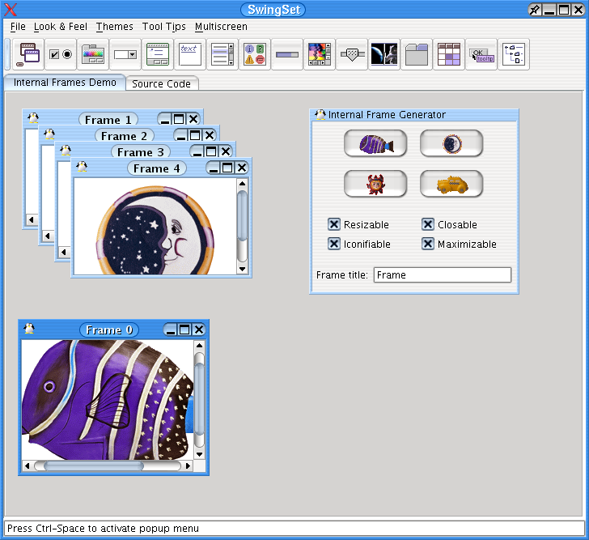
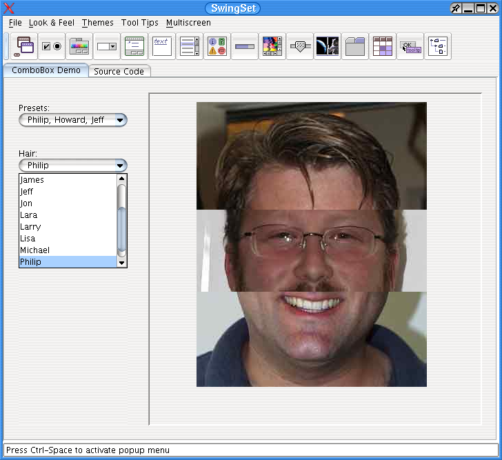
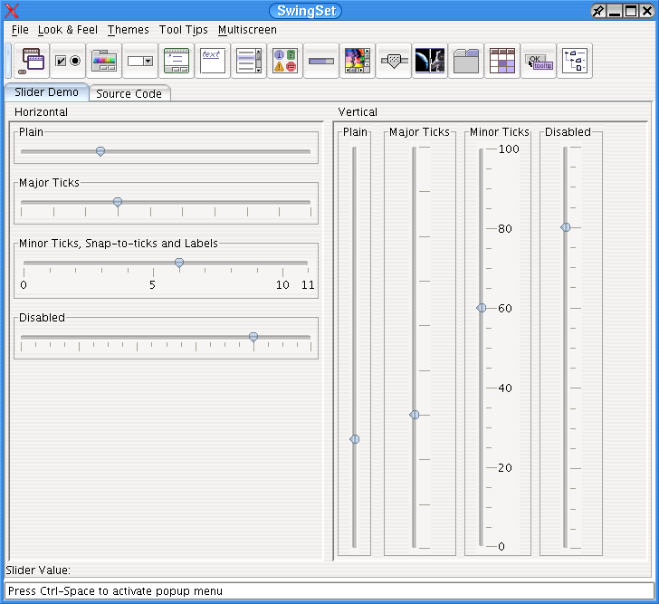

The goal of this project is to provide a look and feel based on the Mosfet Liquid KDE 3.x theme.
To make LiquidLnF the current L&F, add this line to the beginning of your main method:
UIManager.setLookAndFeel("com.birosoft.liquid.LiquidLookAndFeel");
OR use the following VM parameter when launching the application:
-Dswing.defaultlaf=com.birosoft.liquid.LiquidLookAndFeel
To make LiquidLnF the default L&F for all Java applications, you will need to modify the swing.properties file in ../jre/lib.
Here is an example of that file:
swing.installedlafs = motif,windows,metal,mac,liquid
swing.installedlaf.motif.name = CDE/Motif
swing.installedlaf.motif.class = com.sun.java.swing.plaf.motif.MotifLookAndFeel
swing.installedlaf.windows.name = Windows
swing.installedlaf.windows.class = com.sun.java.swing.plaf.windows.WindowsLookAndFeel
swing.installedlaf.metal.name = Metal
swing.installedlaf.metal.class = javax.swing.plaf.metal.MetalLookAndFeel
swing.installedlaf.mac.name = Mac
swing.installedlaf.mac.class = com.sun.java.swing.plaf.mac.MacLookAndFeel
swing.installedlaf.liquid.name = Liquid
swing.installedlaf.liquid.class = com.birosoft.liquid.LiquidLookAndFeel
swing.defaultlaf=com.birosoft.liquid.LiquidLookAndFeel
- A demo of Liquid UI delegates.|  |  |  |
There are several custom properties that can set to alter the default Look of Liquid. Here is the list of the properties with their default setting in blue:
LiquidLookAndFeel.setLiquidDecorations(true);
LiquidLookAndFeel.setLiquidDecorations(true, "mac");
LiquidLookAndFeel.setStipples(false);
LiquidLookAndFeel.setShowTableGrids(true);
LiquidLookAndFeel.setDefaultRowBackgroundMode(false);
LiquidLookAndFeel.setToolbarFlattedButtons(false);
LiquidLookAndFeel.setToolbarButtonsFocusable(false);
LiquidLookAndFeel.setToolbarFlattedButtonsRollover(false);
{kind=link}
{kind=link}
{kind=link}